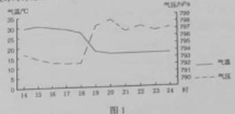
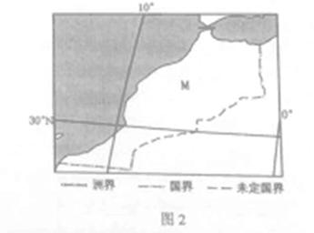
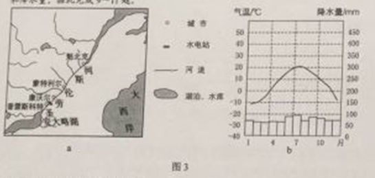
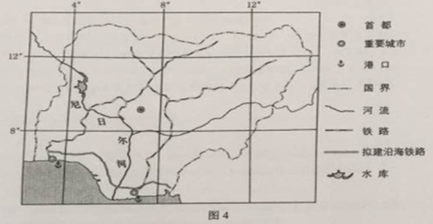
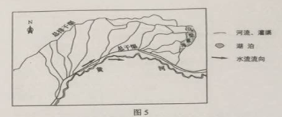
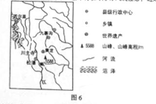
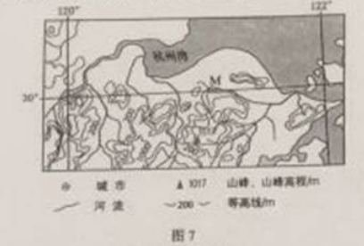

<!doctype html>
<html lang="en">

	<head>
		<meta charset="utf-8">

		<title>2015高考地理（全国卷2） </title>

		<meta name="description" content="A framework for easily creating beautiful presentations using HTML">
		<meta name="author" content="Hakim El Hattab">

		<meta name="apple-mobile-web-app-capable" content="yes">
		<meta name="apple-mobile-web-app-status-bar-style" content="black-translucent">

		<meta name="viewport" content="width=device-width, initial-scale=1.0, maximum-scale=1.0, user-scalable=no, minimal-ui">

		<link rel="stylesheet" href="css/reveal.css">
		<link rel="stylesheet" href="css/theme/solarized.css" id="theme">

		<!-- Code syntax highlighting -->
		<link rel="stylesheet" href="lib/css/zenburn.css">

		<!-- Printing and PDF exports -->
		<script>
			var link = document.createElement( 'link' );
			link.rel = 'stylesheet';
			link.type = 'text/css';
			link.href = window.location.search.match( /print-pdf/gi ) ? 'css/print/pdf.css' : 'css/print/paper.css';
			document.getElementsByTagName( 'head' )[0].appendChild( link );
		</script>
                
    
		<!--[if lt IE 9]>
		<script src="lib/js/html5shiv.js"></script>
		<![endif]-->
              <!--  <script src="/jquery/jquery-1.11.1.min.js"></script> -->
              <script src="js/jquery-1.12.3.js"></script>
<!--                 <script src="js/dianming.js"></script>
<script src="js/jquery.form_1.js"></script>
<!--
<script>
$(document).ready(function(){
  $("button").click(function(){
    $.post("../tk/index.php?r=student/getstudent",
    {
      bj:"1",
      },
    function(data,status){
      alert("数据：" + data + "\n状态：" + status);
    });
  });
});
</script>
-->
<!--<script language="javascript">
      document.onkeydown=function(event){
        var event=event||window.event;
              if(event.keyCode==68){ 
               $.post("../tk/index.php?r=student/getstudent",
   {
    bj:"16",
    //bj:document.getElementById("bj1").value,
     },
    function(data,status){
  //alert("数据：" + data + "\n状态：" + status);
   //  document.htmlForm.submit.click();
    //var text="kdjf";
      //document.getElementById("output1").innerHTML="<div style=\" position: absolute;right:850px;width: 190px;top:500px;\">"+data.xh+" "+data.name+"</div>";
     // document.getElementById("output1").innerHTML=data.xh+" "+data.name;
      // document.getElementById("output1").innerHTML="你按了D";
        var obj = eval('(' + data+ ')');
        document.getElementById("output1").innerHTML="<div style=\"background-color:#ffa; padding:20px\">"+obj.name+"   同学</div>";
        $("div#output1").show(500);
        $("div#output1").hide(6000);
    //};
                  };
             };
   };
    
</script> --> 

	</head>

	<body>

		<div class="reveal">

			<!-- Any section element inside of this container is displayed as a slide -->
			<div class="slides">
                          <!--  <div style="position: absolute;right:860px;top:400px">     <form id="htmlForm" action="../tk/index.php?r=student/getstudent" method="post" > 
                                                 <input type="text" name="bj" value="1" /> 
                                                 <input type="submit" name="submit" value="点名" /> 
                                </form></div>-->
                            
                                <div id="output1" style="position: absolute;right:960px;top:530px;width:220px;color:black"> </div>
                                <section>
				<section>
					<h1 style="text-align: center">2015高考地理（全国卷2） </h1>
                                        <p> </p>
                                       <p> </p>
                                       <p> </p>
                                        
					<p style="text-align: center">

                              	</p>
                                <p style="text-align: center"><small><a href="https://github.com/hakimel/reveal.js">制作工具reveal.js</a></small></p>
				</section>
                                                            	<section id="transitions">
					<h2>幻灯片切换效果</h2>
					<p>
						<a href="?transition=none#/transitions">None</a> -
						<a href="?transition=fade#/transitions">Fade</a> -
						<a href="?transition=slide#/transitions">Slide</a> -
						<a href="?transition=convex#/transitions">Convex</a> -
						<a href="?transition=concave#/transitions">Concave</a> -
						<a href="?transition=zoom#/transitions">Zoom</a>
					</p>
                                        <p>选择班级</p>
                                        <input type="text" id="bj1" value="11" />
				</section>

				<section id="themes">
					<p>
						幻灯片样式 <br>
						<!-- Hacks to swap themes after the page has loaded. Not flexible and only intended for the reveal.js demo deck. -->
						<a href="#" onclick="document.getElementById('theme').setAttribute('href','css/theme/black.css'); return false;">Black (default)</a> -
						<a href="#" onclick="document.getElementById('theme').setAttribute('href','css/theme/white.css'); return false;">White</a> -
						<a href="#" onclick="document.getElementById('theme').setAttribute('href','css/theme/league.css'); return false;">League</a> -
						<a href="#" onclick="document.getElementById('theme').setAttribute('href','css/theme/sky.css'); return false;">Sky</a> -
						<a href="#" onclick="document.getElementById('theme').setAttribute('href','css/theme/beige.css'); return false;">Beige</a> -
						<a href="#" onclick="document.getElementById('theme').setAttribute('href','css/theme/simple.css'); return false;">Simple</a> <br>
						<a href="#" onclick="document.getElementById('theme').setAttribute('href','css/theme/serif.css'); return false;">Serif</a> -
						<a href="#" onclick="document.getElementById('theme').setAttribute('href','css/theme/blood.css'); return false;">Blood</a> -
						<a href="#" onclick="document.getElementById('theme').setAttribute('href','css/theme/night.css'); return false;">Night</a> -
						<a href="#" onclick="document.getElementById('theme').setAttribute('href','css/theme/moon.css'); return false;">Moon</a> -
						<a href="#" onclick="document.getElementById('theme').setAttribute('href','css/theme/solarized.css'); return false;">Solarized</a>
					</p>
				</section>
                                </section>

<section>
	<section>
<p>桑基、蔗基、菜基鱼塘是珠江三角洲地区传统的农业景观和被联全国推介的典型生态循环农业模式。改革开放以来，随着工业化和城镇化的快速发展，传统的基墉农业用地大部分变为建设用地。保留下来的基塘也变以花卉、菜基为主。据此完成1－3题</P>
<p>1、该地基塘转变为建设用地对局地气候的影响是</P>
	<p >A、大气湿度增高</p>
<p >B、大气降水增多</P>
<p >C、近地面风速增大</P>
<p class="fragment highlight-red">D、气温变率增大</P>

		</section>


</section>

<section>
				<section>

					<p>2、农民用花基、菜基鱼塘取代桑基、蔗基的直接目的是</P>
					<p >A、提高土壤质量</p>
					<p >B、节省劳动力</P>
					<p >C、促进生态循环</P>
					<p class="fragment highlight-red">D、提高经济收入</P>

				</section>


</section>


				<section>
				<section>
								<p>3、桑基、蔗基鱼塘被保留的很少，反映了该生态循环农业模式</P>
					<p class="fragment highlight-red">A、与当地产业发展方向不一致</p>
					<p >B、不具有在其他地区推广的价值</P>
					<p >C、与现代农业发展要求不相符</P>
					<p >D、不适应当地水热条件的变化</P>


						</section>

                 </section>


				<section>
				<section>
<p>2013且7月30日，我国西北某地出出沙尘暴，图Ⅰ示意该地当日14时－24时气温、气压随时间的变化、据些完成4－5题。</p>
					<p>4、强沙尘暴经过该地时间段是</P>
					<p >A．16时－17时</p>
					<p >B .17时－18时</p>
					<p class="fragment highlight-red">C．18时－19时 </p>
					<p >D. 19时－20时</p>
					
				</section>

				</section>

				<section>
                 <section>
					<p>5、与正常情况相比，强沙尘暴经过时，该地</P>
					<p >A．气温水平差异减小</p>
					<p class="fragment highlight-red"> B 水平气压梯度增大</P>
					<p > C．地面吸收太阳辐射增多</P>
					<p >D  大气逆辐射减弱</P>
					 
				</section>


				</section>
				<section>
				<section>
<p>1996年我国与M国签订海洋渔业发展合作规划，至2010年我国有20多家沿海渔业企业（总部设在国内）在M国从事渔业捕捞和渔业产品加工工，产品除满足M国需求外，还远销其他国家，图2示意M国的位置，把此完成6－8题</p>
					<p>6、中资企业在M国从事渔业捕捞和渔业产品加工的主要目的是</P>
					<p >A、满足我国需求</p>
					<p class="fragment highlight-red">B、拓展国际市场</P>
					<p >C、提高技术水平</P>
					<p >D、增加当地就业</P>
					
				</section>

				</section>


				<section>
					<section>
						<p>7、如考虑运输成本，在下列国家中，M国中资企业的产品首先应销往</P>
					<p >A.  美国</p>
					<p >B.日本</P>
					<p >C.澳大利亚 </P>
					<p class="fragment highlight-red">D.法国</P>
						
				</section>

			</section>

				<section>
				<section>

					<p>8、如果都以当地时间8：00-12：00和14：00-18：00作为工作时间，在M国的中资企业若在双方工作时间内向其总部汇报业务，应选在当时时间的</P>
					<p class="fragment highlight-red">A、8：00—9：00</p>
					<p >B 、11：00—12：00</P>
					<p >C 、14：00—15：00</P>
					<p >D、17：00—18：00</P>
					
				</section>

				</section>

				<section>
					<section>
<p>圣劳伦斯河（图3a）是一条著名的“冰冻之河”。图3b示意蒙特利尔年内各月气温和降水量。据此完成9—11题。</p>
					<p>9、蒙特利尔失控河段结冰期大致为：</P>
					<p >A、2个月</p>
					<p >B、3个月</P>
					<p class="fragment highlight-red">C、4个月</P>
					<p >D、5个月</P>
						
					</section>

				</section>
				<section>
				<section>

					<p>10、据图示信息推测，冬季可能不结冰的河段位于</P>
					<p >A、安大略湖至普雷斯科特河段</p>
					<p class="fragment highlight-red">B、普雷斯科特至康沃尔河段</P>
					<p >C、蒙特利尔至魁北克河段</P>
					<p >D、魁北克以下河口段</P>
					

				</section>

				</section>
				<section>
                <section>
					<p>11、减少该河凌汛危害的可行措施是
						①加深河道  ②绿化河堤  ③分段拦冰  ④拓宽河道</P>
					<p >A、①②</p>
					<p >B、②③</P>
					<p class="fragment highlight-red">C、③④</P>
					<p >D、①④</P>
					
				</section>

				</section>

					<section>

						<p>36. （22分）阅读图文材料，完成下列要求。</p>
<p>尼日利亚人口超过1亿，经济以农矿也为主。2014年11月20日，尼日利亚与我国正式签署了沿海铁路项目商务合同。该项目总金额达119.7亿美元，全线采用中国铁路技术标准，是截至当时中国对外工程承包史上单体合同金额最大的项目。图4示意尼日利亚铁路的分布。</p>
					</section>


<section>
					<section>
					<p>（1）归纳尼日利亚现有铁路路网特点及作用。（6分）</p>
						
					<p class="fragment fade-in" style="color:red;"> 1）路网特点：线路较少（密度较低）；链接内陆和沿海港口。（2分）
						作用：方便弄矿场品出口和进口商品的运输。（2分）</p>
				</section>

</section>


				<section>
					<section>

						<p>（2）指出尼日利亚拟建沿海铁路的布局特点。（6分）</p>
						<p class="fragment fade-in" style="color:red;">（1） 横贯沿海地区（或几乎与海岸线平行）；（3分）连接东、西两条（通向内陆地区的纵向）铁路，构成铁路网。（3分）</p>

					</section>

				</section>

				<section>
					<section>

						<p>（3）简述尼日利亚沿海地区的气候特点，以及针对此气候特点，我国相关人员在建设该铁路时，为保障身体安康，需要防范的问题。（6分）</p>
						<p class="fragment fade-in" style="color:red;">（2） 气候特点：（纬度低，属热带雨林气候）全年高温多雨。（3分）
							需要防范的问题：中暑；晒伤；食物中毒；毒虫叮咬；野生动物袭击；疫病；瘴气等。（3分）（答对1项得1分。其他合理答案可酌情评分。本部分满分不超过3分。）</p>
					</section>

				</section>
				<section>
					<section>

						<p>（4）指出因尼日利亚沿海铁路项目而可能获益的我国主要工业部门。（4分）</p>
						<p class="fragment fade-in" style="color:red;">（3） 钢铁、机械、机车制造、电子通信、管线、建材等与铁路建设和列车制造有关的部门。（4分）
							（答对1项得1分，答对4项即可得4分。本小题满分不超过4分。）</p>
					</section>

				</section>

				<section>

					<p>37.（24分）阅读图文材料，完成下列要求。</p>
					<p>图5示意河套平原地区。当地将黄河水通过引水渠引入区内灌溉农田，农田灌溉退水经过排水渠汇入乌梁素海。近年来乌梁素海出现污染加重趋势。</p>
				</section>

				<section>
					<section>

						<p>（1）判断河套平原的地势特点，并简述理由。（6分）</p>
						<p class="fragment fade-in" style="color:red;">（1）特点：西高东低，南高北低（或西南高，东北低）。</p>
						
					</section>

				</section>

				<section>
					<section>

						<p>（2）指出长期维持河套罐渠功能必须解决的问题，并简述原因。（6分）</p>
						<p class="fragment fade-in" style="color:red;">（2）问题：泥沙淤积（2分）
							原因：黄河含沙量大，引水入灌区后流速变缓，泥沙易沉积。（4分）</p>

					</section>

				</section>
				<section>
					<section>

						<p>（3）分析近年来乌梁素海污染严重的原因。（6分）</p>
						<p class="fragment fade-in" style="color:red;">3）河套灌区的农田退水绝大部分排入该湖，化肥、农药的使用使得湖水污染加剧；当地工业与城乡生活废水也都排入该湖。（3分）所在区域气候干燥，降水少，湖水以水渠进入和排出，吞吐量较小，流动性差，污染物在湖中积累，污染逐渐严重。（3分）</p>

					</section>

				</section>

				<section>
					<section>

						<p>（4）提出治理乌梁素海污染的措施。（6分）</p>
						<p class="fragment fade-in" style="color:red;">（4）①减少化肥、农药的使用，改变种植结构，采取绿色生产；②严格执行工业和生活废水的排放标准，控制入户废水排放量；③及时清淤，采用生物措施净化；④执行环保法，加大违法排污处罚力度；⑤加大环保宣传，增强人们的环保意识等。
							（答出其中1项得2分，答出其中3项可得6分。其他合理答案可酌情评分，但本小题满分不超过6分。）</p>

					</section>

				</section>


					<section>
						<p>九黄机场位于四川省松潘县川主寺镇（图6），距九寨沟和黄龙景区分别为88千米和43千米，目前已开通成都、重庆、西安、上海、北京、杭州、广州等地至九黄机场的多条航线，近年来九黄机场旅客年吞吐量维持在170万人次，远超设计能力。</p>
						
					</section>
				<section>
					<section>
						<p>分析我国东部地区去九寨沟、黄龙旅游的游客多数乘飞机抵达的原因。</p>
						<p class="fragment fade-in" style="color:red;">评分说明：
							正确指出材料反映的一种变化趋势，如法定假日总天数从少到多，成为法定假
							的传统节日种类增多，小长假出现和增多等，根据史实对变化趋势原因的说明充分恰当。
							示例：
							趋势：改革开放后法定假日总天数从少到多。（4分）
							原因：实行改革开放，社会、经济发展迅速；人民生活水平不断提高，休闲娱乐需求
							增加；增加假日成为促进经济发展的一种手段；政府更加注重民生。（8分）
							（“示例”只作阅卷参考，不作为唯一标准答案。）</p>

					</section>
<section>
	<p>九寨沟、黄龙景区地处偏远，陆路交通可达性差，耗时长；（3分）
	东部地区（主要客源地）经济较发达，居民收入高，支付能力强；（4分）
	与九寨沟、黄龙相距较远，乘飞机可节省路途时间，增加有效的旅游时间。（3分）</p>
</section>
</section>


				<section>
						<p>43，（10分）自然灾害与防治</p>
						<p> 近年来，沿海地区城市遭受严重涝灾的现象时有发生。</p>
					
					</section>
<section>
						<section>
						<p>读图7，分析M市易出现重度涝灾的自然原因。</p>
						<p class="fragment fade-in" style="color:red;">地处平原，地势低平，受南部山区洪水和河流上游汇水的共同影响；（3分）排洪通道少，且易受到潮水和其他河流洪水的顶托，排水不畅；（4分）处于台风过境或登陆区，台风常带来强降雨。（3分）</p>

						</section>

</section>


					<section>

						<p>44、（10分）环境保护</p>
						<p>贵州省某喀斯特山区石漠化严重。农民在山上放牧、砍柴。找土种玉米，当地农民反映，山上的土一年比一年薄，一发大水，土全被冲走了，玉米也被冲走了。石头越来越多，最后连玉米也无法种了，生活越来越困难。</p>

					</section>

<section>
					<section>

						<p>  简述为改善环境并提高人民的生活水平，当地政府应采取的具体措施.</p>
						<p class="fragment fade-in" style="color:red;"> 严格管理，恢复自然植被；将农业生产活动限制在适宜的地方；不适宜的地方实行严格保护措施，避免人类活动扰动土层，以逐步恢复自然植被。
							产业结构调整：引导农民调整产业结构，如选择免耕的农作物，改牲畜放养为圈养等，已避免农业活动过多扰动土地很薄的土壤层。
							合理规划，控制人口数量：按环境承载能力规划人口，将超过环境承载能力的人口转移到较适宜的地区。</p>

					</section>
	<section>


		<p class="fragment fade-in" style="color:red;"> 经济补贴措施：给农民适当经济补贴（包括粮食、商品能源等），解决农民的生活用粮、用柴等问题，帮助农名开辟新的生计（如手工业、第三产业等），或以经济手段鼓励农民主动保护和恢复植被。
			加大环境保护宣传力度：通过实际情况的对比，是农民年认识保护山坡，石间土层的重要性，提高农民保护环境的自觉性。
			吸引社会力量：以优惠政策鼓励个人和企业参与保护和治理环境。
			客土移植：将土壤丰富地区的土壤转移至该地区。
			（每答出1项措施得2分。其他合理答案可酌情评分，但本题满分不得超过10分。）</p>

	</section>

</section>

			</div>

		</div>

		<script src="lib/js/head.min.js"></script>
		<script src="js/reveal.js"></script>

		<script>

			// Full list of configuration options available at:
			// https://github.com/hakimel/reveal.js#configuration
			Reveal.initialize({
				controls: true,
				progress: true,
				history: true,
				center: true,

				transition: 'slide', // none/fade/slide/convex/concave/zoom

				// Optional reveal.js plugins
				dependencies: [
					{ src: 'lib/js/classList.js', condition: function() { return !document.body.classList; } },
					{ src: 'plugin/markdown/marked.js', condition: function() { return !!document.querySelector( '[data-markdown]' ); } },
					{ src: 'plugin/markdown/markdown.js', condition: function() { return !!document.querySelector( '[data-markdown]' ); } },
					{ src: 'plugin/highlight/highlight.js', async: true, callback: function() { hljs.initHighlightingOnLoad(); } },
					{ src: 'plugin/zoom-js/zoom.js', async: true },
					{ src: 'plugin/notes/notes.js', async: true }
				]
			});
</script>
	</body>

</html>
